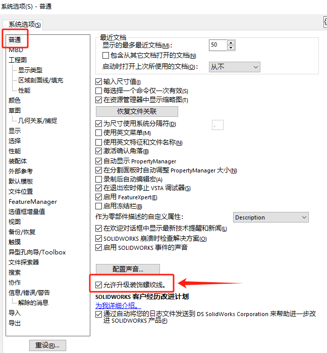

升级装饰螺纹线
SOLIDWORKS 2019及以后版本，装饰螺纹线做了改进：
- 支持锥形螺纹
- 镜向和阵列几何体
- 更好地映射到非平面曲面
- 锥形轴标准

方法1：手动操作
要升级零件、装配体或工程图中的旧装饰螺纹线：
1、在 工具 > 选项 > 系统选项 > 常规 中，选择允许升级装饰螺纹线，然后单击确定。
2、打开模型，右键单击 FeatureManager 设计树中的顶层项目，然后单击升级装饰螺纹线特征。在升级后，命令升级装饰螺纹线特征对该模型不再可用。
方法2：批量处理
API (IModelDocExtension::UpgradeLegacyCThreads)